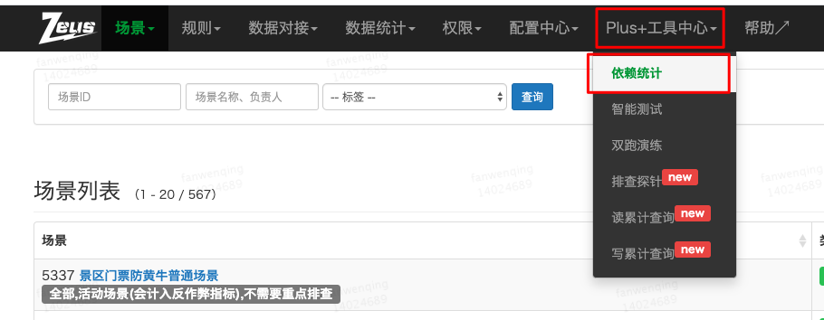
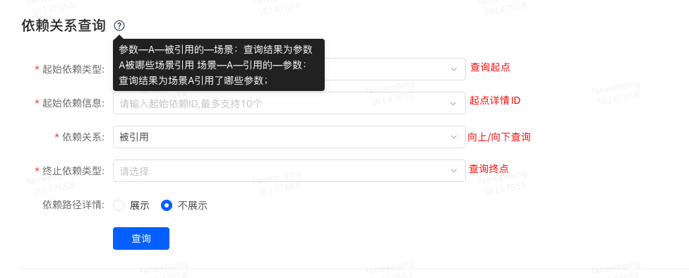
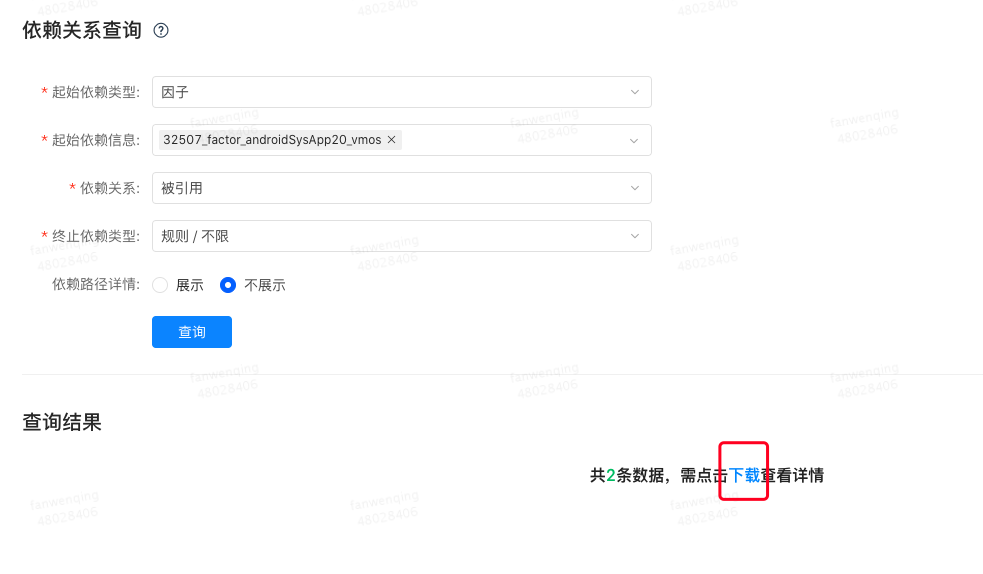
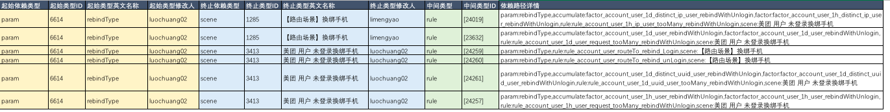

说明：依赖关系查询使用手册
一、背景
解决：快速查询指定场景、规则、因子、参数的依赖的信息和被引用情况，提升人效。旧流程：查询参数被哪些场景引用，需要参数-因子-规则-场景一层层查询，现只需填写查询条件即可；
适用场景-例如：（1）某数据接口要下线，需评估下线影响，并将依赖该接口的规则、因子、参数进行下线；
（2）业务侧升级某参数字段，需评估升级的影响范围；
二、操作说明
1、操作流程概述
2、操作流程详情
Step1:【入口】
首页-->Plus+工具中心-->依赖统计

Step2:【提交查询信息】
输入查询条件，点击 提交

查询条件填写说明：
查询起点：可为路由场景、场景、规则组、规则、普通因子、累计因子、累计事件、扩展因子、参数、数据接口、决策、决策理由、附加信息等
起点详情：支持ID搜索
被引用的/引用的：确定查询方向，向上查询或者向下查询，例如参数A被引用的参数--向上查询参数A被哪些参数引用；参数A引用的参数--向下查询参数A引用了哪些参数
中间信息：选择是否需要在查询结果中展示中间详情，例如：查询参数被哪些场景引用，中间信息包含因子、规则
Step3:【查询结果及解读】
在查询结果中点击 下载

下载的数据解读：

起点信息、终点信息：包含类型、ID、英文名称和最后修改人，当无英文信息时将展示中文信息
中间类型：仅展示类型和ID
依赖路径详情：起点到终点的路径详情，json传格式{类型:英文名称，类型:英文名称，.....,类型:英文名称}
例如：